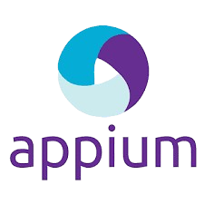
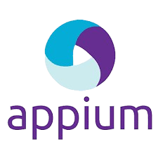
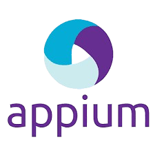
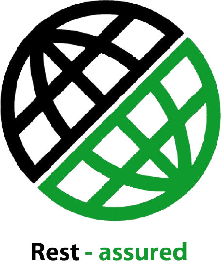
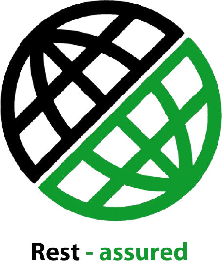

Automation
Automation Framework & Reliability
Ready-to-use Java + Selenium, Appium and Katalon frameworks for parallel regression.
 


A passionate QA Engineer with expertise in manual and automation testing. Dedicated to ensuring software quality through comprehensive testing strategies and innovative automation solutions.


Panca Sakti University Bekasi, Cikarang, West Java
September 2019 – August 2023
• GPA 3.50 / 4.00
• Related courses: Programming Algorithms, Object-Oriented Programming, Database Programming, Information Systems Quality Testing and Maintenance

Dibimbing.id
August 2025 - February 2026
• Deep understanding of SDLC & STLC methodologies in Agile/Scrum environments.
• Developing comprehensive Test Plans, Test Cases, and Bug Reports following industry standards.
• Manual Testing execution on complex Web and Mobile applications.
• Automation Testing proficiency using Selenium WebDriver and Katalon Studio with TestNG framework.
• Advanced API Testing using Postman and Rest Assured (GraphQL/REST) with SQL for database validation.
• Mobile Automation readiness using Appium for Android and iOS testing.
• Behavior-Driven Development (BDD) implementation using Cucumber and Gherkin syntax.
• Defect Management & Collaboration using Jira and Trello.
• Version Control & CI/CD basics utilizing Git and GitHub for script management.

Automation testing for the Guru99 Bank web application using Katalon Studio. Covered login, customer creation, account opening, transactions, and data validation with clear test case structure, data-driven testing, and integrated reporting.
Manual testing on the Guru99 Bank website took a long time and was prone to human error due to many interrelated business flows—such as login, account creation, transactions, and customer management.
Every system change required the QA team to re-run regression manually, making the testing cycle inefficient and difficult to track consistently.
Developed an automation framework using Katalon Studio to replace end-to-end manual testing.
Key steps I took:
Automated API testing suite for the Sport Reservation API using Java, Rest Assured, and TestNG. Covers authentication, sport category, and sport activity CRUD with deterministic, repeatable tests and HTML reporting.
The QA team needed clear and structured API testing reports for the Auth, Sport Category, and Sport Activity modules.
Developed a fully automated API testing framework using Java + TestNG + Rest Assured:

Comprehensive manual testing project for the Petstore web application. Included test case creation and test runs using qase.io for test management, plus bug tracking and reporting via Trello. Covered functional testing, UI/UX testing, and exploratory testing to ensure application quality.
During testing of the Petstore website (an e-commerce simulation platform), several functional mismatches were found in the online shopping process, especially in cart and checkout features. The goal was to validate the end-to-end flow from login and adding products to the cart through checkout in line with requirements, without bugs.
I performed manual testing using Qase.io to manage test cases and record execution results.
Steps taken:
Tools:
Total test cases: 20
All critical bugs were reported and re-verified, achieving a 100% test completion rate in Qase.io.
Results indicate the system is stable for login, cart management, and checkout flows.
The project delivered complete documentation from test scenarios and bug reports to a regression summary.


Comprehensive exploratory and accessibility testing on the Tokopedia e-commerce platform. This project included exploratory testing to find bugs and unexpected issues, and accessibility testing to ensure the application is accessible for users with disabilities. Applied a systematic testing approach with comprehensive documentation.
The Tokopedia website had not been tested for accessibility and UI/UX responsiveness. As one of the largest e-commerce platforms, it must ensure all components are usable by the general public and people with disabilities.
During the Exploratory and Accessibility Testing on Tokopedia, I found a total of 13 bugs affecting functionality, UI/UX, and accessibility. Testing combined manual methods and tools such as Axe DevTools, Chrome DevTools, and WCAG 2.1 AA guidelines.
Findings: 8 bugs
Severity: 3 Medium, 5 Minor
Affected areas: Homepage, Search, Cart, Checkout, and Product Page
Key findings:
Recommendation: Improve input validation, optimize image lazy loading, and run regression testing after UI updates to maintain visual stability.


Findings: 5 bugs
Severity: 2 High, 2 Medium, 1 Minor
Affected areas: Cart, Checkout, Filter, and Transaction Page
Key findings:
Recommendation: Add aria-labels, roles, and descriptive text to interactive elements. Increase text–background contrast to meet WCAG 2.1 AA, and retest with Axe DevTools and Lighthouse to ensure accessibility compliance.


Comprehensive API testing project using Postman to test REST API endpoints and database validation to ensure data integrity. Covered HTTP methods (GET, POST, PUT, DELETE), status code validation, schema validation, and database operations, applying API testing best practices such as environment variables, collections, and automated test scripts.
During API integration for the Sport Activity project, several issues were found that affected the quality and reliability of the backend system.
Some API endpoints showed:
These issues could lead to:
To address these issues, I conducted thorough manual API testing in Postman with both positive and negative testing.
Testing steps included:
All tests were organized into a modular Postman Collection per endpoint, with pre-request scripts and environment variables for efficient testing.
Test results showed:
Key bugs found included:


Ready-to-use Java + Selenium, Appium and Katalon frameworks for parallel regression.

Traceability matrices and exploratory sessions maintain product risk visibility.


Modular Postman + REST Assured verify endpoints and SQL data synchronization.
 


Jira dashboards, Git repositories, and QA documentation keep the team aligned.


"I believe adaptability is crucial in this digital era. I embrace change, learn quickly, and view QA as a collaborative tool to elevate software quality. By combining creativity and technology, we can build meaningful solutions."